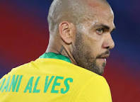

WELLCOME TO MY SPROTS WEBSITE

Another name for aesthetic
and artistic football is Brazil.
We will never see the polite and modest
defender of football in the yellow jersey.
Seeing your face brought tears to my eyes.
Maybe, I won't be able to show your game
to my next generation. But I will know you.
Civla has never seen a red card in his career.
After losing to Croatia in the quarter-finals,
he announced that he will retire after playing
the 2024 Copa America.


Brazilian legend Neymar Jr. is not
talking about retirement right now.
Maybe I won't see Neymar again in the World Cup.
Neymar has proved that he is a big match player today... a generation of Neymar will remember you forever.
But Richarlison, Rafinha, Vinicius, Rodrigo or Pedro have not reached maturity yet! Keeping your nerve in big matches is also a big part of the game. But Brazil's biggest mistake was going on the attack after going ahead.
But what Croatia's goalkeeper Levakovic did today is definitely super monstrous! Brazil was knocked out by the extraordinary saves he made...!Neymar was defeated by Croatia in the quarter-finals 4-2 in Tribeca. However, football king Pele has requested Neymar to play another World Cup.
See you again at the next World Cup.

Football fans will never see Dani
Alves in the yellow jersey again.
There was no lack of effort, maybe I won't see
you in the 2026 World Cup. But football and
soccer fans will miss you dearly Dani Alvez. Dani
Alvez is a 39 year old defender. Even at this age he
is playing like a young man. Never see you again.
Good in the yellow jersey.
« Previous
Next »
‹
›
talking about retirement right now.
Maybe I won't see Neymar again in the World Cup.
Neymar has proved that he is a big match player today... a generation of Neymar will remember you forever.
But Richarlison, Rafinha, Vinicius, Rodrigo or Pedro have not reached maturity yet! Keeping your nerve in big matches is also a big part of the game. But Brazil's biggest mistake was going on the attack after going ahead.
But what Croatia's goalkeeper Levakovic did today is definitely super monstrous! Brazil was knocked out by the extraordinary saves he made...!Neymar was defeated by Croatia in the quarter-finals 4-2 in Tribeca. However, football king Pele has requested Neymar to play another World Cup.
See you again at the next World Cup.
Football fans will never see Dani
Alves in the yellow jersey again.
There was no lack of effort, maybe I won't see
you in the 2026 World Cup. But football and
soccer fans will miss you dearly Dani Alvez. Dani
Alvez is a 39 year old defender. Even at this age he
is playing like a young man. Never see you again.
Good in the yellow jersey.